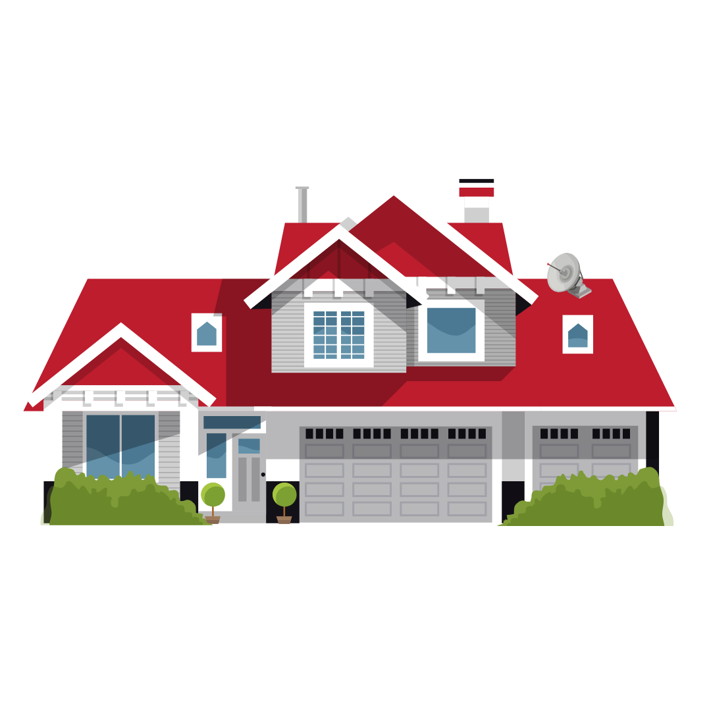
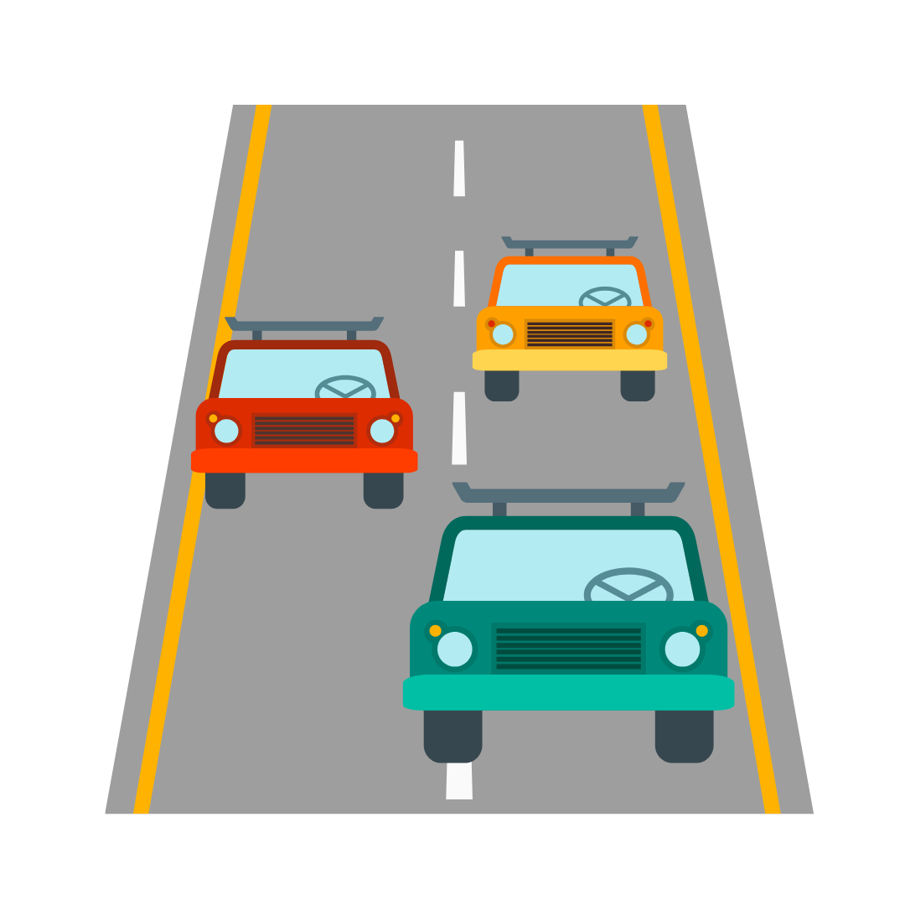
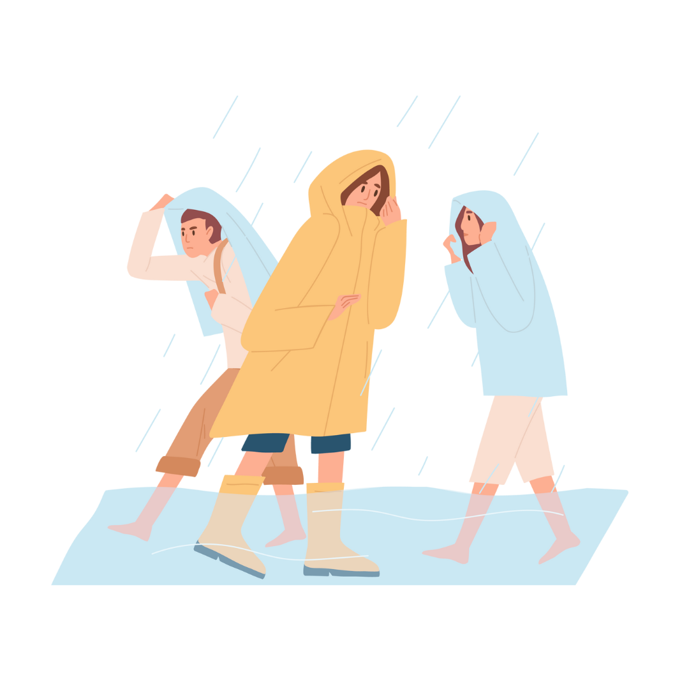
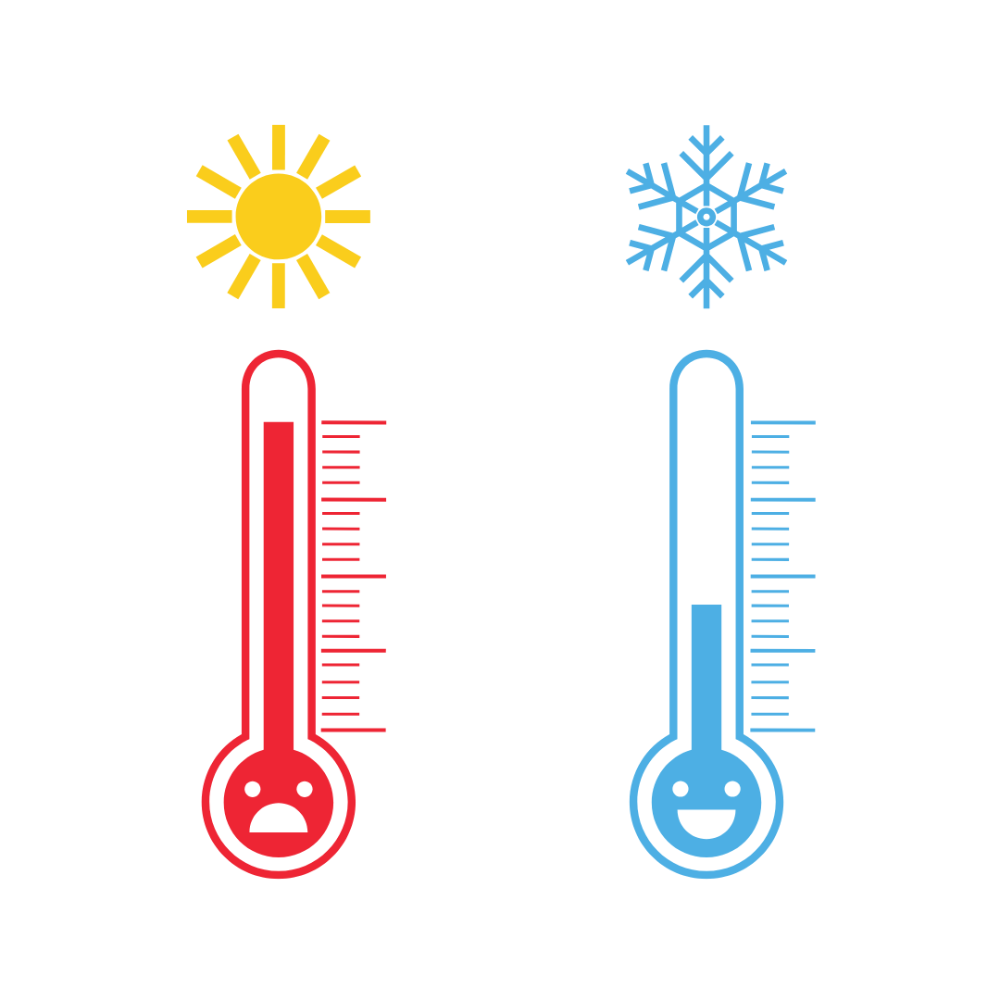

Você sabe se proteger de uma enchente ou de uma chuva forte?
Aqui vão algumas dicas importantes para garantir sua segurança:
Se estiver na rua:
- Procure abrigo seguro: Entre em lojas, prédios ou qualquer estrutura resistente.
- Evite árvores: Elas podem atrair raios e até cair com ventos fortes.
- Evite árvores: Elas podem atrair raios e até cair com ventos fortes.
- Fique longe de postes, fiações e estruturas metálicas: Podem conduzir eletricidade em caso de raios.
- Não atravesse áreas alagadas: A água pode esconder buracos, bueiros abertos ou correntezas perigosas.
Se estiver na rua:
- Desligue aparelhos eletrônicos: Raios podem queimar eletrodomésticos..
- Feche portas e janelas: Para evitar a entrada de vento, água e até cacos de vidro, se houver ventania forte.
- Afaste móveis e objetos da área das janelas: Por segurança.
- Mantenha lanternas e velas por perto: Pode faltar luz.

Se estiver no carro:
- Permaneça dentro do carro: Ele funciona como uma “gaiola de Faraday”, protegendo contra raios.
- Evite áreas alagadas: A água pode ser mais funda do que parece e o carro pode ser arrastado.
- Estacione em lugar seguro: Longe de árvores, postes ou encostas.

Se houver muitos raios:
- Não fique em campos abertos, praias ou topos de morros.
- Agache-se no chão (com os pés juntos) se não houver abrigo, mantendo-se o mais baixo possível, mas nunca deitado.

Se puder, se prepare antes:
- Tenha sempre uma capa de chuva dobrável na bolsa ou mochila.
- Use calçados fechados e, se possível, impermeáveis.
- Acompanhe a previsão do tempo, especialmente em dias com possibilidade de tempestades.
